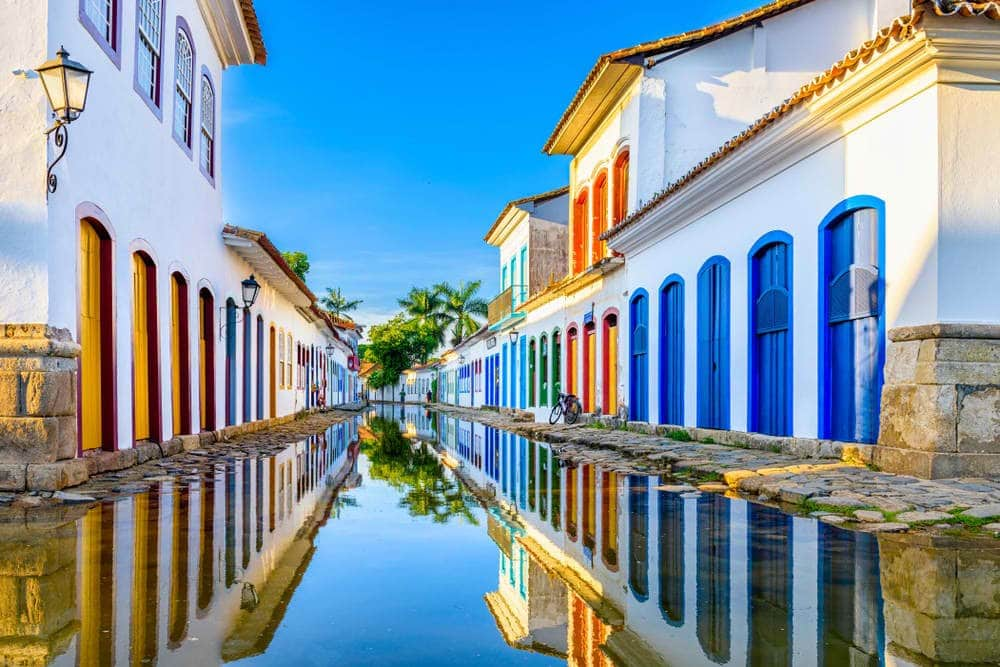

Descubre la maravilla de viajar por el mundo. ¡Haz clic para obtener más información!
¡Bem-vindo! ¡Bienvenido a Brasil! el 5º país más grande del mundo.
¡Todo para unas vacaciones de diez lo puedes encontrar aquí!
Atractivos Turísticos
-
Cristo Redentor
-
Pueblos Coloniales
 -
Cataratas de Iguazú

-
Carnaval de Rio
Itinerario
Día 1:
Río de Janeiro, Empieza con buen pie visitando la ciudad más espectacular del país: Río de Janeiro.
No solo te conquistará su riqueza natural, sino también su cultura.
Día 2:
Cataratas de Iguazú, visitar una de las 20 maravillas del mundo.
Día 3:
Lençóis Maranhenses Una de las maravillas naturales de Brasil es este parque nacional de 1.550 kilómetros cuadrados.
Con dunas de hasta 40 metros de altura salpicadas por imponentes lagunas de aguas turquesas.
Día 4:
Ilha Grande de sus playas vírgenes, paseos en barco o incluso trilhas, senderos en los que disfrutarás de su vegetación y fauna de Ilha Grande.
Día 5:
Paratyuno de los lugares coloniales mejor conservados del país.
Sus calles empedradas flanqueadas por casas blancas y ribetes de colores te enamorarán tanto de día como de noche, cuando no faltan los restaurantes y bares para tomar una rica caipirinha.